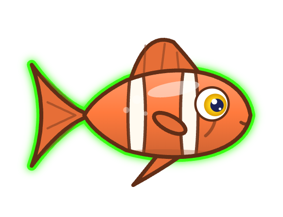
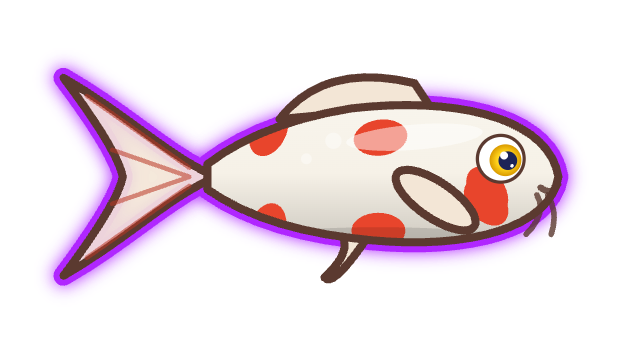
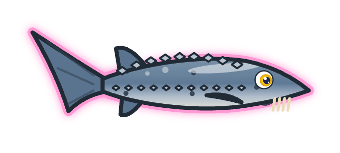
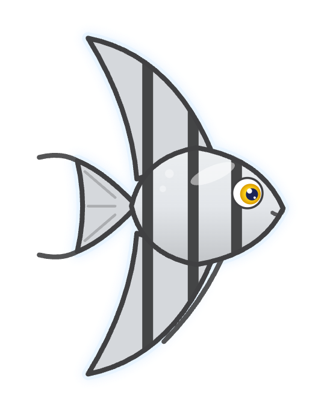
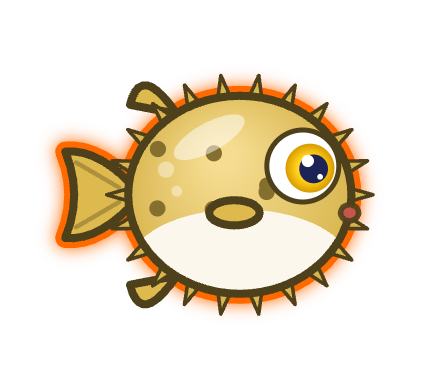
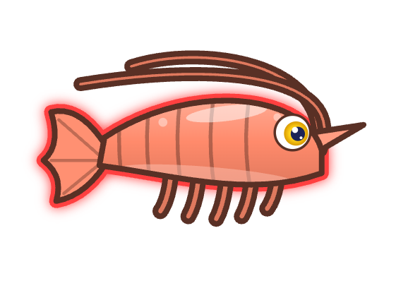

Tropical fish
The classic: bright, striped and always in a hurry. Comes in many colours and patterns.
Every Claude Code or Copilot CLI session swims in your tank as one of these. A new session gets the creature and glow colour there are fewest of, so no two look alike, and keeps them for as long as it lives. The helpers it starts (subagents) swim along as small copies.

The classic: bright, striped and always in a hurry. Comes in many colours and patterns.

Long, calm and elegant, with whiskers and a flowing tail. Each one has its own pattern of spots.

An ancient fish with a pointed snout and a row of bony plates down its back.

Tall, striped and graceful, with long fins sweeping up and down.

Round, spiky and a little slow. Don't startle it.

Jets along mantle first, fins at the tip and its arms streaming behind.

Small, curved and busy, with long feelers sweeping back over its shell.

Big claws first. Comes in red, orange, plum and the rare blue.

Grumpy, toothy and proud of the glowing lure dangling in front of its face.

The "devil fish": bold stripes, a crest of long spines and big feathery fins.

Eight curly arms full of suckers. Its trailing arms ripple as it swims.

Swims upright and takes its time, with a little crown, a long snout and a curly tail.
The session's agent is working.
It's waiting for you: a permission prompt or a question.
The session is idle.
The glow is the session's colour; the same colour marks it in the side panel. Click the water to feed them: the nearest creature comes for it. Click a creature to jump to its session.